世界平和までのロードマップの構造編です。ロードマップの診断で示した二つのシステム不全——資本が資本を生む場所にしか流れない札束資本主義と、熟慮された民意を汲み上げられない情弱民主主義——に対して、世界が発明してきた「お金と民意の回路」＝サブシステムを集めています。一人ひとりの対話のミクロな技法は対話技法図鑑（実践編）に。この図鑑は、その対話が社会のどんな配管につながるのかを描く地図です。明文化した収載基準に沿って選定し、各項目にエビデンス水準ラベルと出典を添えています。
「良さそうな制度」を編集者の好みで集めると、図鑑は恣意的なコレクションになってしまいます。そこでこの図鑑では、次の3つをすべて満たす仕組みのみを収載しています。
あわせて、各項目にエビデンス水準のラベルを付けています。水準が低い＝価値が低い、ではありません。新しい発明は検証がこれからで当然です。ラベルは「どんな種類の裏付けがあるか」を正直に示すためのものです。
準拠している主なデータベース・評価機関：
OECD 熟議民主主義データベース
Participedia
J-PAL（MIT貧困アクションラボ）
Government Outcomes Lab（オックスフォード大学）
※三部作の位置づけ——戦略の全体像は世界平和までのロードマップ（戦略編）、仕組みを動かす人の側の技は世界の対話技法図鑑（実践編）をご覧ください。各項目の「対になる実践」から相互に行き来できます。
札束資本主義への処方。資本がさらなる資本を生む場所にしか流れないのなら、必要な場所へ流す回路を人の手で敷けばいい——そう考えた人たちの発明です。
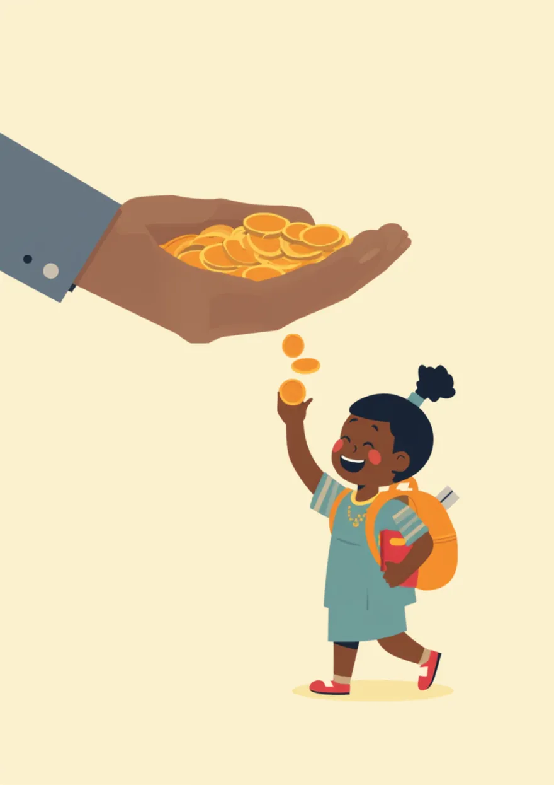
子どもの就学や予防接種などを条件に、貧困世帯へ直接現金を給付する仕組み。メキシコのプログレサは導入時からランダム化比較試験による効果検証を組み込んだ設計で知られ、就学率や健康指標の改善が確認されて、いまや数十カ国に広がる標準的な貧困対策になりました。市場が届けないなら条件付きで直接届ける——札束資本主義の外側に引かれた、最初の太い水路の一つです。
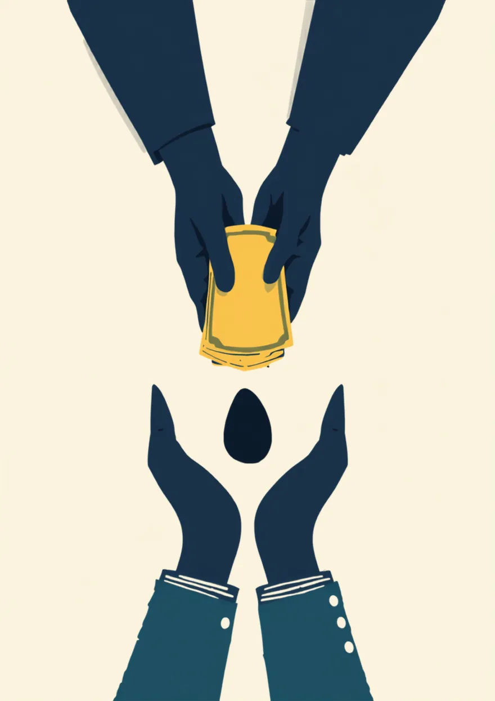
条件すら付けず、貧困世帯に現金をそのまま送る仕組み。GiveDirectlyはケニアなどで大規模なランダム化比較試験を重ね、消費・資産・栄養の改善を確認するとともに、「現金を渡すと浪費が増える」という通念が概ね裏付けられないことを示してきました。世界最大規模のユニバーサル・ベーシックインカム長期実験も進行中です。「貧しい人はお金の使い方を知らない」という認知こそが妖怪だった、と検証が教えてくれた例です。
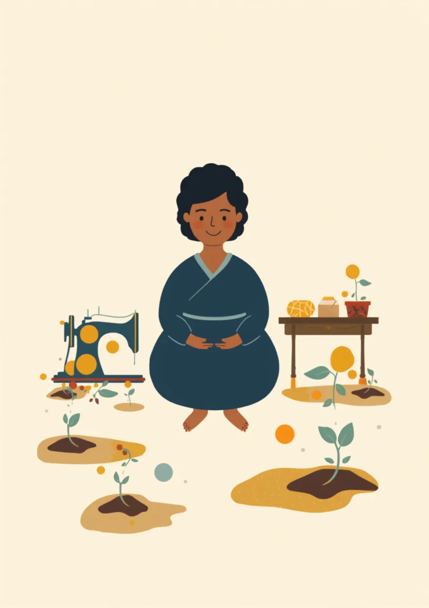
担保を持たない貧困層、とりわけ女性に小口の融資を行うグラミン銀行の仕組みで、創設者ユヌスとともに2006年のノーベル平和賞を受賞しました。ただしその後の複数のランダム化比較試験では、貧困脱出の効果は当初の熱狂よりも穏やかであることが分かってきています。この図鑑があえてそれを書くのは、「効果を測り、期待を修正できる」こと自体が仕組みの健全さの証だからです。金融アクセスという回路の価値は、いまも残っています。
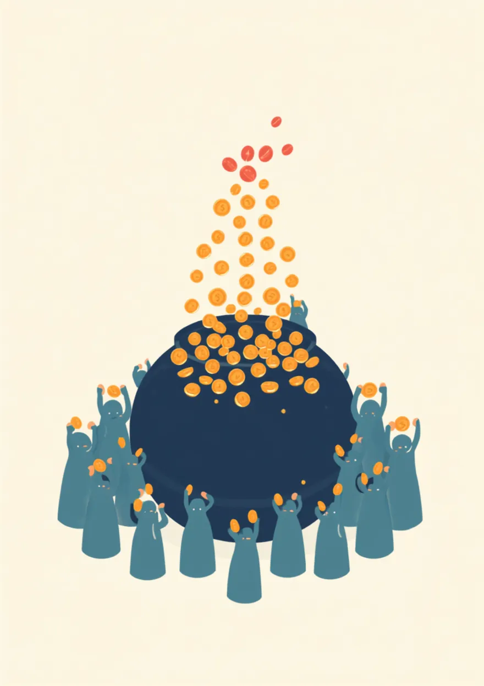
「一人の大口」より「多数の小口」を数学的に優遇するマッチング寄付の仕組み。多くの人が少しずつ支持するプロジェクトほど、共有の資金プールからの上乗せが大きくなるよう設計されています。Gitcoinがオープンソースソフトウェアの資金分配で運用を重ね、誰の儲けにもならない公共財へお金を流す回路として注目されています。札束資本主義の「一円＝一票」を、数式のレベルで書き換える試みです。
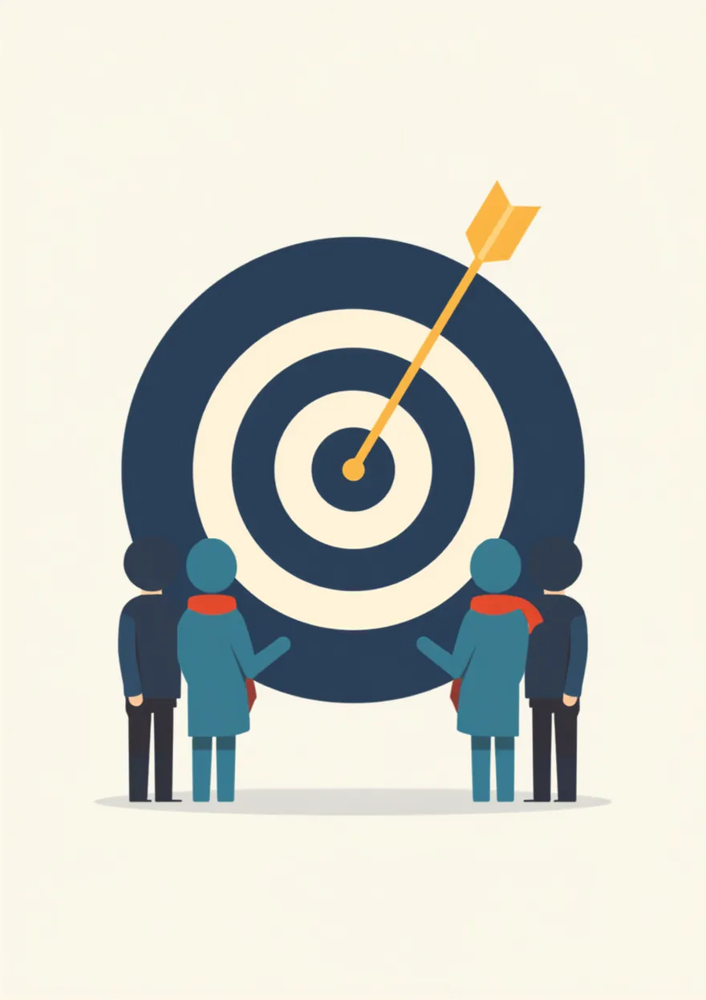
再犯防止や健康改善などの社会的成果が実際に出たときにだけ、行政が投資家に償還する官民連携の仕組み。「成果」に値札を付けることで、儲からないが社会コストを大きく減らす予防領域に民間資金を呼び込みます。英国ピーターバラ刑務所の再犯防止事業から始まり、日本でも神戸市や八王子市などの自治体が導入してきました。効果は事例によって濃淡があり、成果指標の設計の巧拙が問われる段階です。
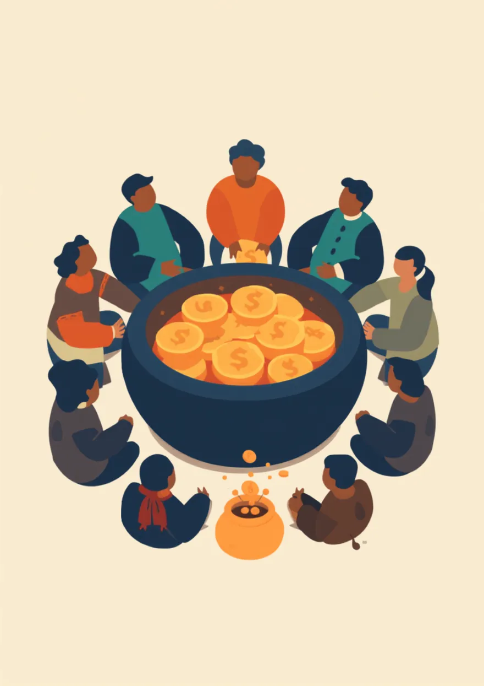
働く人自身が出資し、経営方針を一人一票で決める企業形態。スペインのモンドラゴンは数万人規模で「経営の民主主義」を半世紀以上実証し続けています。日本でも2020年に労働者協同組合法が成立し（2022年施行）、3人から設立できるようになりました。企業という札束資本主義の中心部に、民主主義のサブシステムを埋め込む発明です。組合の合意形成そのものが、毎日の対話のトレーニングにもなります。
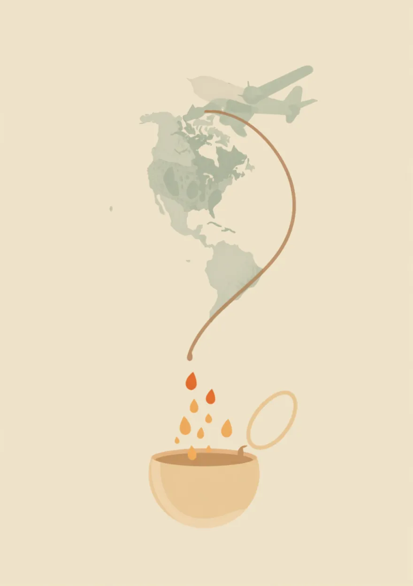
国境を越える経済活動——航空券など——にごく薄い税を乗せ、地球規模の課題へ直接流す仕組み。フランス発の航空券連帯税は、途上国への医薬品供給を担う国際機関Unitaidの主要財源になりました。「儲かる流れ」の川岸に小さな取水口を設け、水の届かない土地へ引く灌漑のような発想で、金融取引税などへの拡張も議論が続いています。
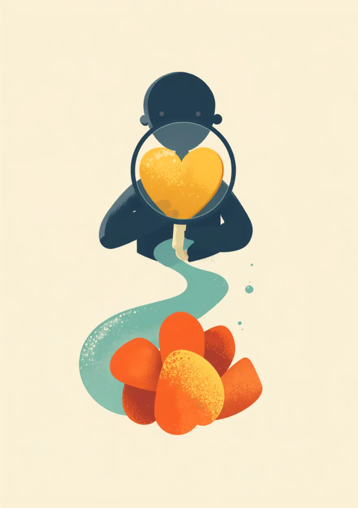
「1ドルあたり最も多くの命を救う寄付先はどこか」を公開の調査で比較し、推奨先を絞り込む評価の仕組み。GiveWellに代表され、広告力や感情ではなく費用対効果で寄付の流れを変える回路として、これまでに大規模な資金移動へ影響を与えてきました。善意という貴重な資源の、交通整理にあたる発明です。マイクロファイナンスの項と同じく、「測って直す」文化の産物でもあります。
「お金の回路」を、世界規模の貧困をなくすという一点に絞って深掘りした姉妹図鑑もあります → 世界の貧困解決アイデア図鑑
情弱民主主義への処方。数年に一度の選挙と多数決だけに頼らず、「考えた後の民意」「選好の強さ」「分断の向こうの合意」を汲み上げるための発明です。現場の対話の様子は対話技法図鑑と対になっています。
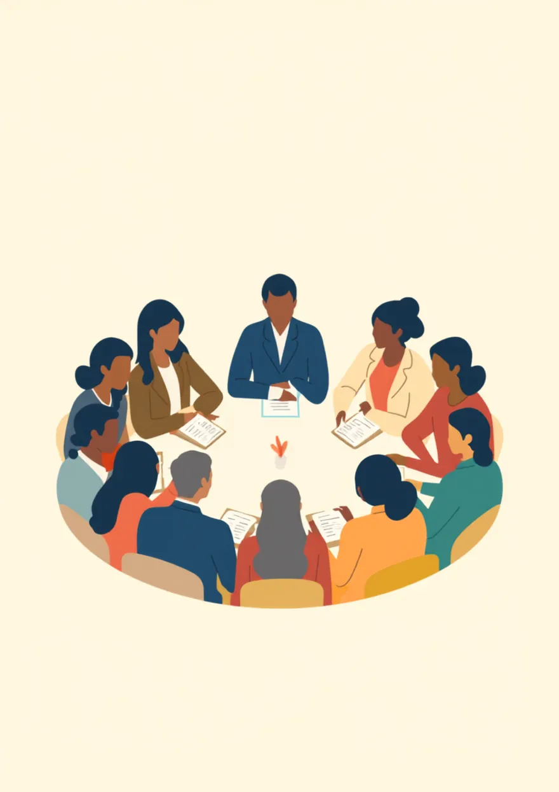
世論調査が「考える前の意見」を集めるのに対し、くじ引きで選ばれた市民が情報と時間を与えられて出す「考えた後の民意」を制度化する仕組み。アイルランドの憲法改正やフランスの気候市民会議で国政レベルの実績があり、OECDは34カ国733事例を比較して成功条件を整理しています。情弱民主主義の核心——熟慮の機会の不在——への、最も直接的な処方です。
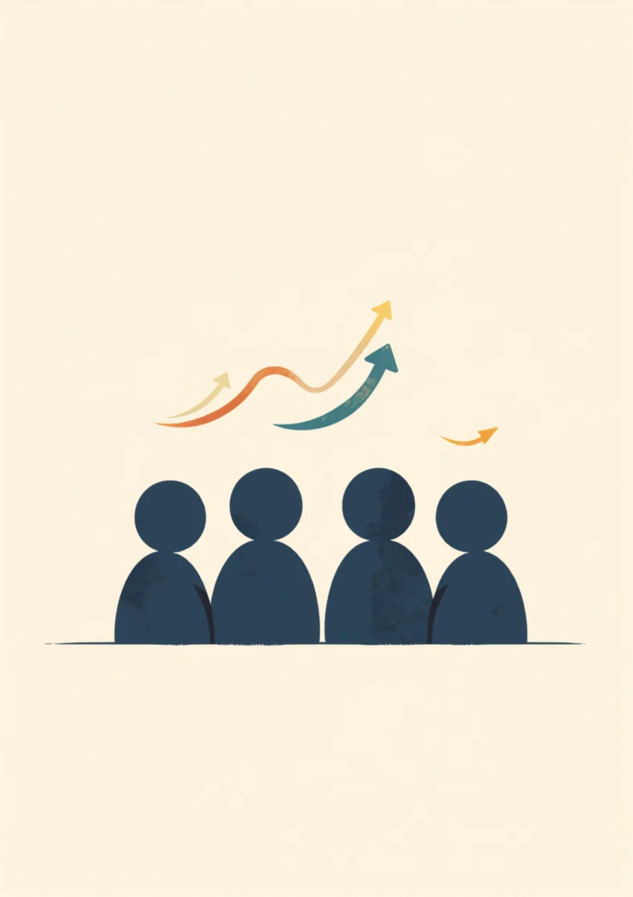
無作為抽出された数百人が、バランスの取れた資料と専門家への質疑、小グループ討論を経て、参加前後で意見がどう変わったかまで測定する世論調査。スタンフォード大学のフィシュキンが開発し、世界数十カ国で、日本でもエネルギー政策などを題材に実施されてきました。「国民が十分な情報を得て考えたら、世論はどうなるか」を科学的に可視化する装置です。
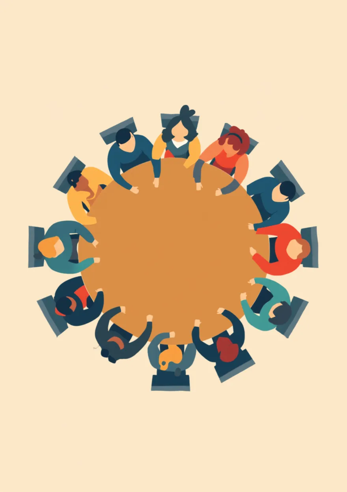
公共予算の一部の使い道を、市民の話し合いで直接決める仕組み。ブラジルのポルトアレグレで始まり、世界数千の自治体に広がりました。導入自治体では保健・衛生への支出増と乳幼児死亡率の低下との関連が実証研究で報告されています。「お金の配分」と「民意」を同じテーブルに載せるため、この図鑑の二つのカテゴリを一本でつなぐ、二つの機能不全への同時処方です。
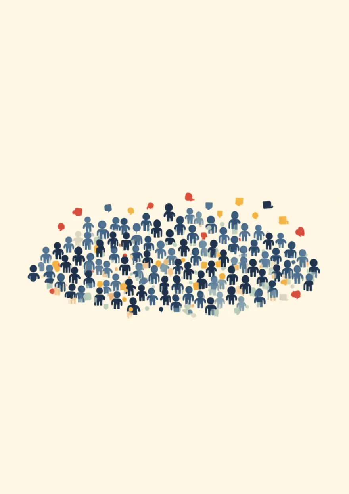
数千〜数万人の意見をアルゴリズムとAIで構造化し、「分断の地図」と「意外な合意点」を可視化する仕組み。台湾のvTaiwanがライドシェア問題などの合意形成で先行し、日本でも2024年以降、東京都の政策づくりやチームみらいの取り組みなどで急速に広がっています。声の大きさではなく、声の分布を見るための——いわば民意の顕微鏡です。
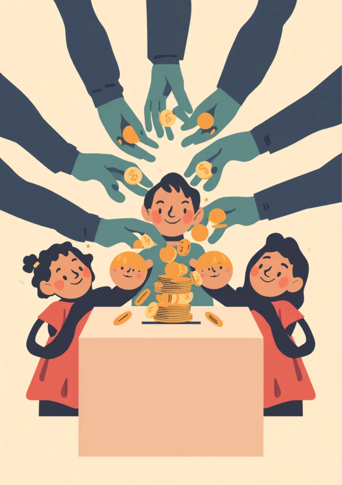
一人が複数の票を持ち、強く思う論点に多く投じられる——ただし票数の二乗のコストがかかる——投票方式。「どれに賛成か」だけでなく「どれくらい大事か」という選好の強さを測れるのが特徴です。米コロラド州議会が法案の優先順位づけに実際に使い続けているほか、台湾の総統杯ハッカソンなどでも運用され、多数決の解像度を上げる仕組みとして検証が進んでいます。
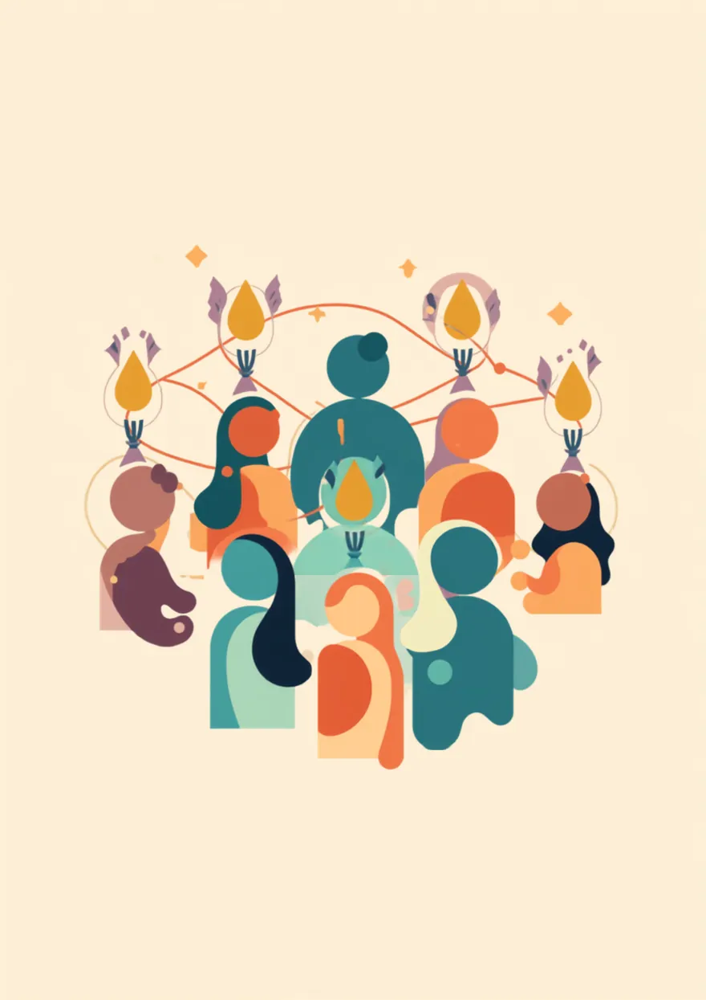
論点ごとに「自分で投票する」か「信頼する人に票を委任する」かを選べる、直接制と代議制のハイブリッド。ドイツ海賊党がLiquidFeedbackというソフトウェアで大規模に実験しましたが、少数への委任の集中など運用上の課題も見えてきました。成功例としてではなく、失敗の記録ごと参照できる貴重な社会実験のログとして収載しています。
SNS投稿への補足情報を、「普段は意見が対立している人たち」の双方から支持された場合にだけ表示する仕組み。分断を煽るほど拡散する通常のアルゴリズムとは逆に、対立を橋渡しする内容をコードで優遇する「ブリッジング」という設計思想に基づきます。X（旧Twitter）で運用され、誤情報の拡散抑制に関する研究も出始めました。情報空間そのものを情弱民主主義の増幅装置から解毒する試みの、代表例です。
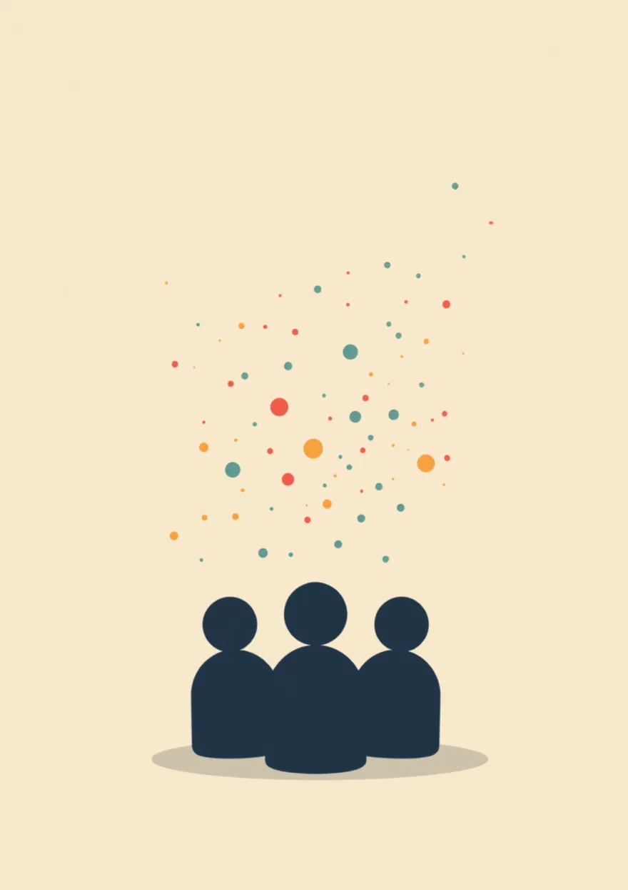
選挙だけに頼らず、人々の言葉・行動・反応の膨大なデータから民意を抽出し、アルゴリズムが政策決定を支援するという、経済学者・成田悠輔さんの構想。実装はまだ思考実験の段階ですが、ロードマップの診断（札束資本主義×情弱民主主義）の着想元でもあり、「上からの処方」の到達点の一つとして収載します。私たちの持ち場は、この種の構想と市民の日常の間を埋めるトレーニングとサブシステムの側にあります。
どんなに良い回路も、それを使いこなす市民と、共有地を守る規範がなければ動きません。二つの機能不全の土壌そのものを耕す仕組みです。
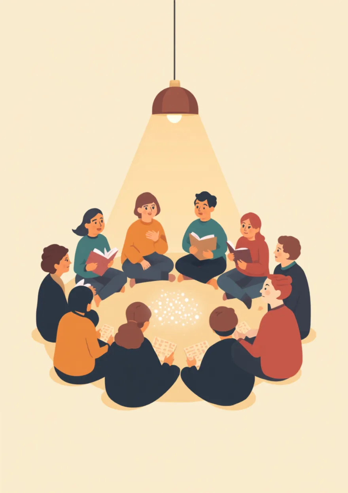
試験も成績もなく、対話と共同生活を通じて「社会をつくる市民」を育てるデンマークの成人教育機関。グルントヴィの思想から180年、いまも約70校が稼働し、デンマークが世界最高水準の民主主義指数を保つ土壌の一つとされています。仕組み（制度化された学校）と実践（対話の日常）が一体になった、この図鑑と対話技法図鑑の結び目にあたる存在です。デモクラシーフィットネスも、この伝統の現代版の一つです。
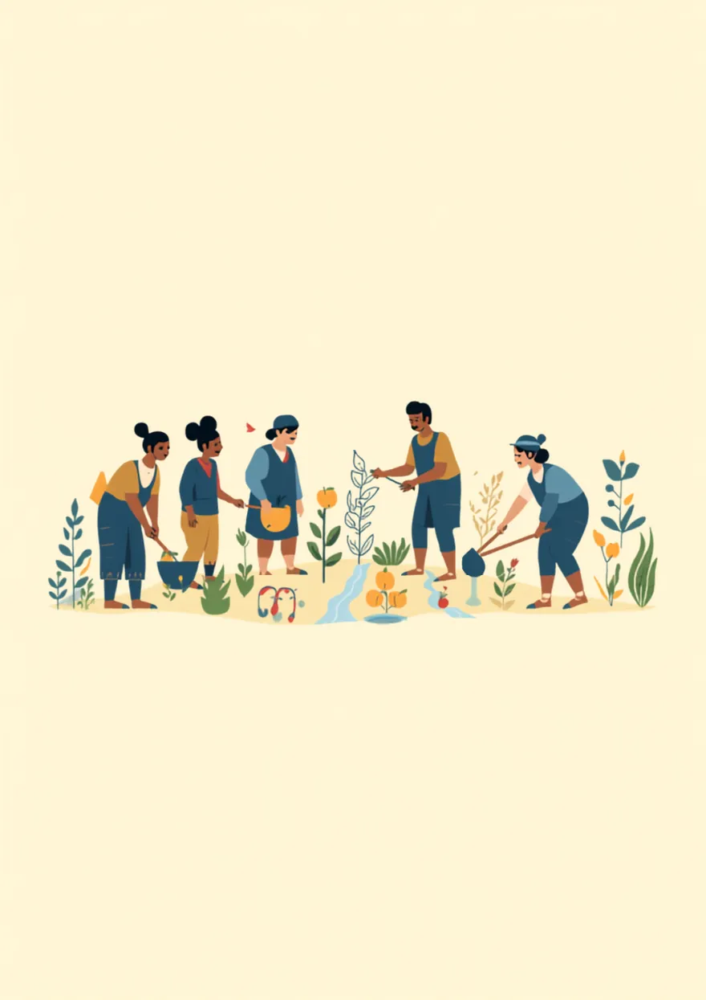
森・水・漁場のような共有資源は「みんなのものは荒れる」と言われてきました。しかしエリノア・オストロムは、世界中の現地調査から、住民が自主ルールで何百年も共有地を守り続けてきた事例群を発見し、境界の明確さや当事者によるルール設定など8つの設計原理に整理しました（2009年ノーベル経済学賞）。日本の入会地もその代表例です。札束にも国家にも頼らない「第三の統治」の、最も検証された地図です。
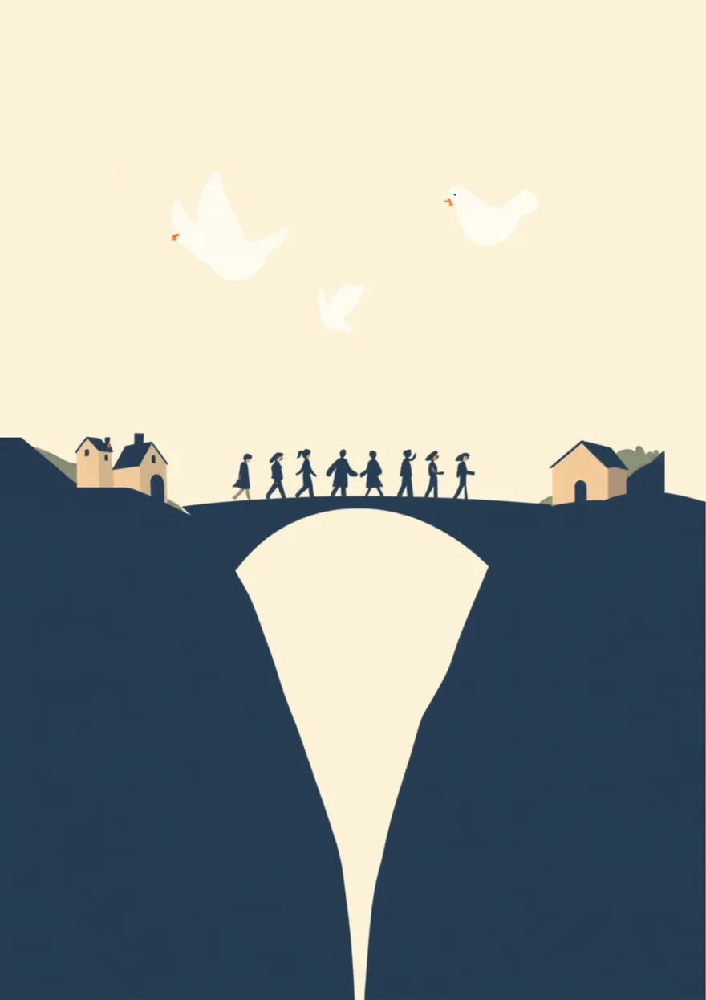
紛争が起きてから外部が介入するのではなく、地域ごとの平和委員会や対話の常設窓口を、あらかじめ社会に埋め込んでおくという考え方。ガーナは全国・州・郡の各レベルに平和評議会を法制化し、選挙時の暴力の抑止に貢献したと評価されています。消防署のように「平和の常備施設」を社会に置くという発想は、ロードマップが描く「毎日通える道場」と同じ思想の、国家スケール版です。
ここに載っているのは、世界の発明のほんの一部です。あなたの知っている「お金や民意の流れを変えている仕組み」を、ぜひ教えてください。制度、テクノロジー、地域の工夫——スケールは問いません。いただいた情報をもとに、この図鑑を一緒に育てていけたら嬉しいです。